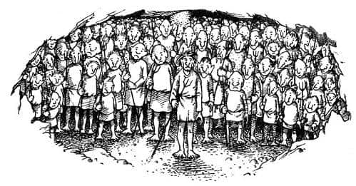
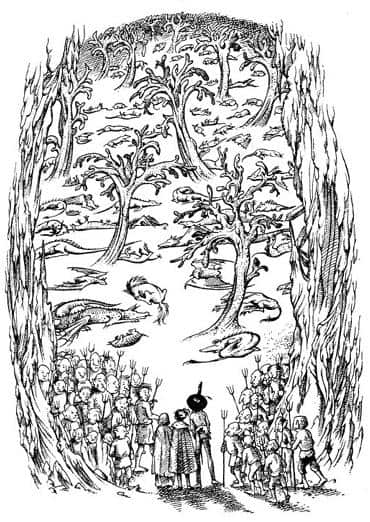
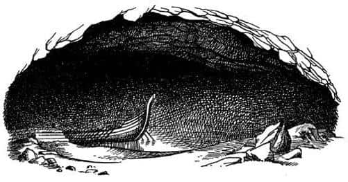

Güneşsiz Yolculuk
“Kim o?” diye bağırdı üç yolcu.
“Ben Yeraltı Ülkesi’nin sınır bekçisiyim ve yanımda yüz tane silahlı Toprak İnsan var” diye bir cevap geldi. “Kim olduğunuzu ve Derinlerdeki Ülke’de ne işiniz olduğunu söyleyin çabuk.”
“Yanlışlıkla düştük” dedi Suratsız; doğruyu söylemişti.
“Birçok kişi düşer ve pek azı güneşli ülkeye geri döner” dedi ses. “Şimdi benimle derinlerdeki ülkenin Kraliçesine gitmeye hazırlanın.”
“Bizden ne istiyor?” diye sordu Scrubb çekinerek.
“Bilmiyorum” dedi ses. “Onun emirleri sorgulanmaz, ona itaat edilir.”
Bu kelimeleri söylerken hafif bir patlamaya benzer bir ses duyuldu ve anında mavi-gri renkli soğuk bir ışık mağarayı doldurdu. Konuşanın, yüz silahlı adamından bahsederken, yalan söylediğine dair umutlar aniden sönmüştü. Jill gözlerini kırpıştırarak büyük bir kalabalığa bakarken buldu kendini. Kalabalığı oluşturanlar boy boydu; otuz santim boyunda cüceler de vardı, normal bir insandan çok daha uzun boylular da. Ellerinde üç çatallı mızraklar taşıyor ve bir heykel kadar hareketsiz duruyorlardı. Hepsi de insanı korkutacak kadar soluk tenliydi. Ancak bunun dışında birbirlerine pek benzemiyorlardı; bazılarının kuyruğu vardı, bazılarının yoktu; bazılarının yüzleri balkabağı kadar büyük ve yusyuvarlaktı. Aralarında uzun sivri burunlular, hortuma benzer uzun yumuşak burunlular ve kocaman şişko burunlular vardı. Birkaçı alınlarının ortasında bir boynuz taşıyordu. Bir bakıma hepsi birbirine benziyordu; hepsi de çok üzgün görünüyordu. Öyle üzgün görünüyorlardı ki, ilk bakıştan sonra Jill onlardan korkmayı unutmuştu. Onları neşelendirmek istiyordu.

“Pekâlâ” dedi Suratsız ellerini ovuşturarak. “Tam da ihtiyacım olan şey. Eğer bu delikanlılar bana yaşamı ciddiye almayı öğretemezse, kim öğretir bilemem. Şu mors gibi bıyığı olan adama bak, ya da şu—”
“Kalkın ayağa” dedi Toprak İnsanlar’ın reisi.
Yapılacak başka bir şey yoktu. Üç yolcu ayağa kalkıp el ele tutuştu. Böyle anlarda insan arkadaşının elini tutmak ister. Büyük ve yumuşak ayaklarıyla yürüyen Toprak İnsanlar çevrelerini sardı; kiminin on, kiminin on iki parmağı vardı, kiminin ise hiç parmağı yoktu.
“Yürüyün” dedi bekçi ve yürümeye başladılar.
O soğuk ışık uzun bir sırığın ucundaki büyük bir küreden geliyordu ve bunu sıranın başında duran, cücelerin en büyüğü taşıyordu. Cansız ışık huzmeleri altında doğal bir mağarada olduklarını görebiliyorlardı; tavan ve duvarlar yamrı yumru ve bin türlü inanılmaz şekille kaplıydı; taşlık yol aşağıya doğru eğim kazanıyordu. Bu Jill için çok kötüydü, çünkü yeraltından ve karanlıktan nefret ederdi. İlerledikçe yolun daralıp tavanın alçalmasından ve ışık taşıyan cücenin kenara çekilip diğer cücelerin (en küçüğü hariç hepsinin) birer birer eğilerek küçük ve karanlık bir delikte kaybolmasından sonra, Jill buna daha fazla dayanamayacağını hissetti.
“Oraya giremem, giremem, giremem, girmeyeceğim” dedi nefes nefese. Toprak İnsanlar bir şey söylemediler, ama mızraklarını ona doğru çevirdiler.
“Sakin ol Pole” dedi Suratsız. “Sonra genişlemese o büyük adamlar oraya sürünerek girmezlerdi. Ayrıca yeraltında olmanın iyi bir yanı var, artık hiç yağmur yağmayacak.”
“Ah, anlamıyorsun. Giremem” diye feryat etti Jill.
“O uçurumda kendimi nasıl hissettiğimi düşün” dedi Scrubb. “Sen önce gir Suratsız, ben onun ardından geleceğim.”
“Doğru” dedi Kıllıkıpırdak, diz çökerek. “Sen benim topuklarıma tutun, Pole, Scrubb da seninkine tutunsun. O zaman hepimiz rahat ederiz.”
“Rahat mı?” dedi Jill. Sonunda çöktü ve sürünmeye başladılar. Kötü bir yerdi. Aslında sadece beş dakika sürdü, ama onlara yarım saat gibi geldi. Sıcaktı. Jill bunaldığını hissediyordu. Sonunda ileride soluk bir ışık göründü, tünel genişledi ve yüksekliği arttı. Ter ve kir içinde, kafaları allak bullak bir halde tünelden çıktılar. Geldikleri yer o kadar ferah bir yerdi ki, hiç de mağara gibi görünmüyordu.
Mağaranın içinde loş bir ışık vardı, bu yüzden Toprak İnsan’ın garip fenerine artık ihtiyaçları kalmadı. Zemin yumuşaktı ve bir tür yosunla kaplıydı; topraktan ağaçlar kadar uzun ve dallı, fakat mantar gibi cansız bir sürü garip şey çıkmıştı. Bir orman oluşturabilmek için birbirlerine fazla uzaklardı; daha çok bir parka benziyordu. Işık (yeşile çalan gri bir ışık) hem onlardan hem de yosunlardan geliyor gibi görünüyordu. Tavan belli ki çok yüksekti ve ışık oraya ulaşacak kadar güçlü değildi. Bu ılıman, yumuşak ve uyuklatıcı yerde yürümeye başladılar. Çok hüzünlüydü, ama hafif bir melodi gibi sakin bir hüzündü bu.

Yerde yatan düzinelerce garip hayvanın yanından geçtiler; Jill ölü mü yoksa uyumakta mı olduklarını ayırt edemiyordu. Hayvanlar ejderha ya da yarasaya benzer türdendi; Suratsız onların ne olduğunu bilmiyordu.
“Bunlar burada mı yetişir?” diye sordu Scrubb bekçiye. Bekçi, kendisiyle konuşulduğuna çok şaşırmış gibi görünüyordu, “Hayır. Onlar mağaralar ve çatlaklar vasıtasıyla yerüstünden derinlerdeki ülkeye gelen hayvanlardır. Birçoğu gelir ve çok azı güneşli ülkeye geri döner. Dünyanın sonu geldiğinde uyanacakları söylenir” diye cevapladı.
Bunu söyledikten sonra adeta dudakları mühürlendi ve çocuklar mağaradaki derin sessizlikte tekrar konuşmaya cesaret edemeyeceklerini hissettiler. Cücelerin kalın yosun tabakasına basan çıplak ayakları hiç ses çıkarmıyordu. Rüzgâr, kuş ya da su sesi yoktu, hayvanlardan soluk sesi gelmiyordu.
Millerce yürüdükten sonra başka bir kaya duvarına geldiler, orada başka bir mağaraya açılan kemerli bir giriş vardı. Bir önceki giriş kadar kötü değildi ve Jill başını eğmeden geçebildi. Bu onları dar ve uzun, bir katedral büyüklüğündeki daha küçük bir mağaraya getirdi. Burada, neredeyse tüm mağarayı kaplayan kocaman bir adam uyuyordu. Devlerden çok daha büyüktü ve yüzü bir devinki gibi değildi, soylu ve güzeldi. Beline kadar inen bembeyaz sakalının altındaki göğsü alçalıp yükseliyordu. Gümüş rengi bir ışıkla (kimse nereden geldiğini göremiyordu) aydınlanıyordu.
“Bu kim?” diye sordu Suratsız. Çok uzun bir süredir kimseden çıt çıkmıyordu, bu yüzden Jill onun bu cesaretine şaşırdı.
“Bu bir zamanlar Yerüstü’nde Kral olan yaşlı Zamanbaba” dedi Bekçi. “Şimdi Derinlerdeki Ülke’ye düştü ve üstteki dünyada yapılan şeylerin rüyasını görerek uyuyor. Birçokları düşer ve pek azı güneşli ülkeye geri döner. Dünyanın sonu geldiğinde uyanacağını söylerler.”
O mağaradan çıkıp bir başkasına geçtiler, sonra bir başkasına, bir başkasına daha… Jill mağaraların sayısını unutana kadar devam etti bu. Sürekli yokuş aşağı gidiyorlardı ve her mağara bir öncekinden daha alçaktaydı. Üstteki toprağın ağırlığını ve ne kadar derinde olduklarını düşününce bunalıyorlardı. Sonunda, Bekçi’nin fenerin yeniden yakılmasını emrettiği bir yere geldiler. Sonra o kadar geniş ve karanlık bir mağaraya geçtiler ki, kıpırtısız suyun kenarında uzanan açık renkli bir kum şeridinden başka bir şey göremiyorlardı. Orada, küçük iskelenin yanında, ne yelkeni ne de direği, ama birçok küreği olan bir gemi duruyordu. Gemiye bindirildiler ve pruvada, kürekçi sıralarının önündeki küpeştede, bir oturak bulunan açıklığa götürüldüler.

“Bilmek istediğim tek şey” dedi Suratsız, “bizim dünyamızdan – yukarıdan bahsediyorum – kimsenin daha önce böyle bir yolculuk yapıp yapmadığı.”
“Birçokları sınır sahillerden gemiye bindi” dedi Bekçi “ve—”
“Evet, biliyorum” diye sözünü kesti Suratsız. “Çok azı güneşli ülkeye geri döndü. Tekrar söylemene gerek yok. Sabit fikirli bir adamsın, değil mi?”
Çocuklar Suratsız’ın yanına sokuldu. Yeryüzündeyken onun oyunbozan olduğunu düşünmüşlerdi, ama yeraltında onları rahatlatan tek kişi oydu. Sonra fener geminin ortasına asıldı, Toprak İnsanlar küreklere geçti ve gemi hareket etmeye başladı. Fenerin cılız ışığı çok az yeri aydınlatıyordu. İleriye baktıklarında zifiri karanlıkta kaybolan siyah sudan başka bir şey göremiyorlardı.
“Ah, ne olacak bize?” dedi Jill umutsuzca.
“Bozma moralini Pole” dedi Suratsız. “Hatırlaman gereken bir şey var. Doğru yola geri döndük. Harabe Şehir’in altına girmemiz gerekiyordu ve onun altındayız. Tekrar işaretleri takip etmeye başladık.”
Az sonra yemek verildi; pek tadı olmayan yassı ve yumuşak bir tür kekti bu. Bundan sonra birer birer uykuya daldılar. Uyandıklarında her şey tamamen aynıydı; cüceler hâlâ kürek çekiyor, gemi hâlâ ilerliyordu ve ilerisi hâlâ kapkaranlıktı. Kaç kez uyuyup uyandıklarını ve kaç kez yemek yediklerini hiçbiri asla hatırlayamadı. En kötüsü de sanki hep o gemide, o karanlıkta yaşamışlardı; güneşin, mavi göğün, rüzgârın ve kuşların sadece bir rüya olup olmadığını merak etmeye başlamışlardı.
Tam korkmaktan ya da umut etmekten vazgeçiyorlardı ki önlerinde bir ışık belirdi. Fenerinkine benzeyen kasvetli bir ışıktı bu.
Sonra aniden ışıklardan biri yakınlarına geldi ve başka bir geminin geçmekte olduğunu gördüler. Bundan sonra birçok gemi gördüler. Sonra tüm dikkatleriyle, gözleri sulanıncaya kadar bakarak, ilerideki ışıklardan bazılarının iskele, duvarlar, kuleler ve hareketli kalabalıklara benzeyen şeyleri aydınlattığını gördüler. Fakat hâlâ hiç ses yoktu.
“Vay be” dedi Scrubb. “Bir şehir!” Çok geçmeden bunun doğru olduğunu gördüler.
Çok tuhaf bir şehirdi. Çok az ışık vardı ve ışıklar birbirinden çok uzaktaydı. Dünyamızda birbirinden uzaktaki kulübeleri aydınlatmak için bile bundan daha fazla ışık kullanılır. Işıkların yardımıyla görebildikleri şey büyük bir liman şehrini andırıyordu. Bir yerde gemiler yükleme ve boşaltma yapıyor; bir başka yerde depolar ve sürüyle balya duruyordu. Başka bir yerde büyük saraylar ya da tapınakları andıran duvarlar ve sütunlar, ışığın aydınlattığı yerlerde, sonsuz bir kalabalık; dar caddeler, geniş alanlar ya da muhteşem merdivenler üzerinde yavaşça işlerini görüp, birbirlerini itekleyerek yürüyen yüzlerce Toprak İnsan vardı. Limana yaklaştıkça sürekli hareket halindeki kalabalığın yumuşak, mırıltılı bir ses çıkardığını duydular, ancak çevrede ne bir şarkı, ne bir çığlık, ne bir zil ne de tekerlek gürültüsü duyuluyordu. Şehir neredeyse bir karınca yuvasının içi kadar sessiz ve karanlıktı.
Sonunda gemileri iskeleye yanaştı ve demir attı. Üç yolcu, bekçinin eşliğinde karaya çıkarılıp şehre gönderildi. Birbirlerine benzemeyen birçok Toprak İnsan kalabalık caddelerde bir arada yürüyor, o hüzünlü ışık birçok hüzünlü ve garip suratı aydınlatıyordu. Kimse yabancılarla ilgilenmiyordu. Jill asla ne yaptıklarını öğrenemedi; cüceler çok meşgul görünüyordu. Hiç durmuyor, birbirlerini itip kakıyor, sessiz adımlarla patır patır bir oraya bir buraya koşturup duruyorlardı.
Sonunda sadece birkaç penceresinde ışık olmasına rağmen muazzam bir kaleymiş gibi görünen bir yapıya ulaştılar. Kaleden içeriye sokulup bir avludan geçtiler ve birçok merdiven tırmandılar. Sonunda aydınlatılmış ama yine de kasvetli görünen büyük bir salona girdiler. Salonun bir köşesinde insanların kullandığı türden sarımsı ve güzel bir ışıkla aydınlanmış kemerli bir kapı vardı. İşte bu harikaydı! Işık, kemerin içinde taş duvarlar arasında yukarıya doğru tırmanan bir merdivenin dibini aydınlatıyordu. Yukarıdan geliyor gibi görünüyordu. İki Toprak İnsan, nöbetçi ya da kapıcı gibi, kapının iki yanında duruyordu.
Bekçi kapıdakilere yaklaştı ve sanki bir parola verirmiş gibi, “Birçokları Yeraltı Dünyası’na gelir” dedi.
“Ve pek azı güneşli ülkeye geri döner” diye cevapladılar sanki parolanın devamıymış gibi. Sonra üçü kafa kafaya verip konuşmaya başladılar. “Sana majesteleri kraliçenin büyük bir iş için buradan ayrıldığını söylüyorum. O dönene kadar bu yerüstü yaratıklarını hapishanede tutsak iyi olur. Pek azı güneşli ülkeye geri döner.”
Konuşmaları, Jill’e dünyanın en harika sesiymiş gibi gelen bir sesle kesildi. Ses yukarıdan, merdivenlerin tepesinden gelmişti. Berrak, mükemmel bir insan sesiydi; genç bir adamın sesi.
“Ne yumaklar örüyorsunuz orada, Şabalak?” diye bağırdı. “Yukarı dünyalılar ha? Onları hemen bana getirin.”
“Lütfen, ekselanslarının hoşuna giderse belki—” diye başladı Şabalak, ama sözü kesildi.
“Hoşuma gidecek şey bana itaat etmenizdir, yaşlı geveze. Onları yukarıya getir” dedi.
Şabalak başını salladı, yolculara onu takip etmelerini işaret etti ve merdivenleri çıkmaya başladı. Her basamakta aydınlık artıyordu. Duvarlar renkli goblenlerle kaplıydı. Lambaların altın renkli ışıkları merdivenin başındaki perdelerden süzülmekteydi. Toprak İnsan perdeleri araladı ve kenara çekildi. İçeriye geçtiler. Parlak goblenlerle kaplı, çok güzel bir odaydı. Ocakta ateş yanıyor, alevlerin ışığı masanın üzerindeki şarap şişelerinde yansıyordu. Sarışın bir genç onları selamlamak için ayağa kalktı. Yakışıklı biriydi, yüzünde anormal bir ifade olmasına rağmen cesur ve nazik görünüyordu. Siyah elbiseler içindeydi ve tavırları biraz Hamlet’i andırıyordu.
“Hoş geldiniz yerüstünde yaşayanlar” diye bağırdı. “Yalnız durun bir dakika! Affınızı rica ederim! Siz iki çocuğu ve garip mürebbiyenizi daha önce de gördüm. Ben kraliçemle beraber giderken, Yüksek Ova sınırındaki köprüde karşılaştığım üç kişi siz değil miydiniz?”
“Ah – konuşmayan kara şövalye siz miydiniz?” diye bağırdı Jill.
“O kadın yeraltı kraliçesi miydi?” diye sordu Suratsız hiç de dostça olmayan bir sesle. Aynı şeyleri düşünmekte olan Scrubb patladı, “Öyleyse eğer, bizi devlerin kalesine göndermekle çok alçakça davrandı. Bizimle ne derdi olduğunu bilmek isterim.”
“Nasıl?” dedi Kara Şövalye kaşlarını çatarak. “Bu kadar genç bir savaşçı olmasaydın, sen ve ben bunun üzerine ölümüne kavga ederdik, çocuk. Kraliçemin şerefini lekeleyen tek bir söz duymak istemem. Ancak şundan emin olabilirsiniz ki, size ne söylediyse iyi niyetle söylemiştir. Onu tanımıyorsunuz. O, sadakat, dürüstlük, merhamet, nezaket, cesaret ve bunun gibi erdemlerin oluşturduğu bir çiçek demetidir. Ben bildiğimi söylerim. Bana gösterdiği, karşılığını hiçbir şekilde ödeyemeyeceğim nezaketi takdire değer bir şeydir. Onu tanıyacak ve seveceksiniz. Bu arada, derinlerdeki ülkede işiniz ne?”
Suratsız onu durdurmaya çalışırken Jill ağzından kaçırıverdi, “Narnialı Prens Rilian’ı arıyoruz.” Sonra ne korkunç bir riski göze aldığını fark etti; bu insanlar düşman olabilirdi. Ancak Şövalye hiç ilgilenmedi.
“Rilian? Narnia?” dedi dikkatsizce. “Narnia? Orası da neresi? İsmini hiç duymamıştım. Yerüstünün bildiğim bölümlerinden binlerce fersah uzakta olmalı. O zaman sizi buraya, Kraliçemin ülkesine – ne diyorsunuz ona? Bilian? Trilian? – Prens’i aramaya getiren tuhaf bir hayal olmalı. Bildiğim kadarıyla burada böyle bir adam yok.” Yüksek sesle gülmüştü ve Jill kendi kendine, “Acaba yüzündeki ifade bundan mı kaynaklanıyor? Komik mi görünüyorum?” diye düşündü.
“Bize Harabe Şehir’in taşlarındaki bir mesajı aramamız söylendi” dedi Scrubb. “Biz de BENİM ALTIMDA kelimelerini gördük.”
Şövalye bu sefer katıla katıla güldü. “Aldanmışsınız” dedi. “O kelimelerin sizin amacınızla bir ilgisi yok.” Kraliçeme sorsaydınız size daha iyi öğütler verebilirdi. Çünkü o kelimeler, onun hatırladığı kadarıyla antik zamanlarda şu dizelerle ifade edilmiş daha uzun bir yazıdan kalanlardır:
Şimdi yeraltında ve tahtsız olsam da,
Yaşarken koca bir dünya vardı benim altımda.
Açıkça görülüyor ki, antik devlerin büyük krallarından biri orada gömülü ve mezar taşına bu övünçlü sözleri kazdırmış; ama bazı taşların parçalanması, bazılarının yeni binalarda kullanılmak için taşınması ve bazı hendeklerin de molozla dolması sadece iki kelimeyi okunur durumda bırakmış. Onların sizin için yazıldığını sanmanız, dünyanın en komik şeyi.”
Jill ve Scrubb’ın başından aşağıya kaynar sular dökülmüştü sanki; çünkü bir yanlış anlama söz konusuymuş gibi görünüyordu, küçük bir tesadüf onları yanıltmış olabilirdi.
“Siz ona bakmayın” dedi Suratsız. “Tesadüf olmadı. Rehberimiz Aslan’dır; dev kral harfleri kazdırdığında Aslan da oradaydı ve bu söyledikleriniz de dahil, onlara ne olacağını biliyordu.”
“Sizin bu rehber çok yaşlı biri olmalı dostum” dedi Şövalye, tekrar gülerek.
Jill bu gülüşlere sinir olmaya başlamıştı.
“Bana öyle görünüyor ki, efendim” diye cevapladı Suratsız, “dizeleri ilk kazıldığındaki gibi hatırlıyorsa, sizin bu Kraliçeniz de çok yaşlı biri olmalı.”
“Çok açıkgözsün kurbağa suratlı” dedi Şövalye, Suratsız’ın omzuna vurup gülerek. “Hedefi on ikiden vurdun. O tanrısal bir ırktandır ve ne yaşlılığı ne de ölümü bilir. Benim gibi zavallı ve ölümlü bir yaratığa gösterdiği sınırsız cömertlik için ona minnettarım. Çünkü şunu bilmelisiniz ki, ben çok garip bir hastalığın etkisindeyim, ekselansları kraliçeden başka hiç kimse bana sabır gösteremezdi. Sabır mı dedim? Bu onun ötesinde bir şey. Bana yerüstünde büyük bir krallık vereceğine ve ben kral olunca benimle evleneceğine söz verdi. Ancak bu hikâye aç ve ayakta dinlenmeyecek kadar uzun. Hey, siz oradakiler! Misafirlerime şarap ve yukarıda yaşayanların yiyeceklerinden getirin. Lütfen oturun Baylar. Küçük Bayan, şu sandalyeye oturun. Hepsini dinleyeceksiniz.”